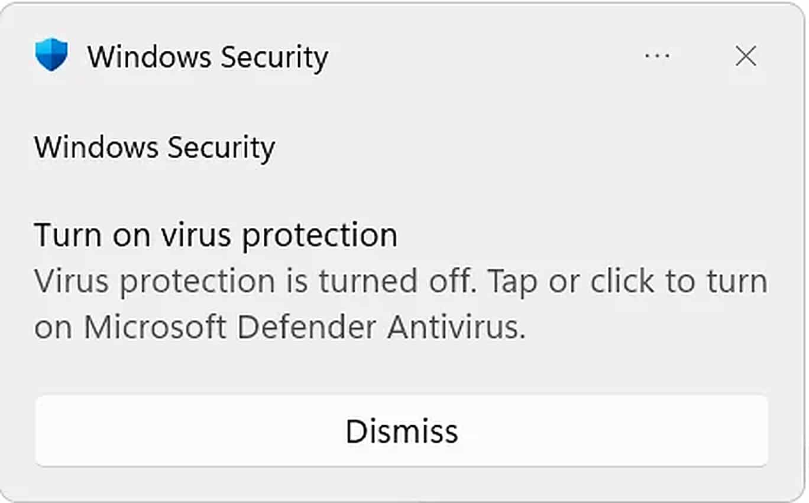
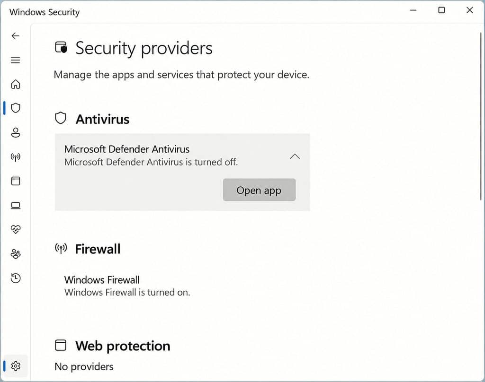
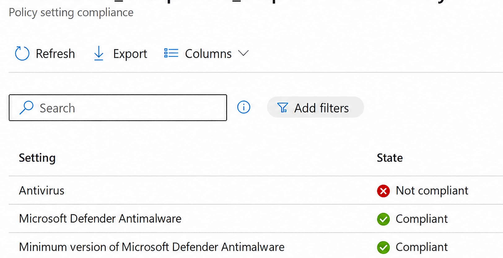
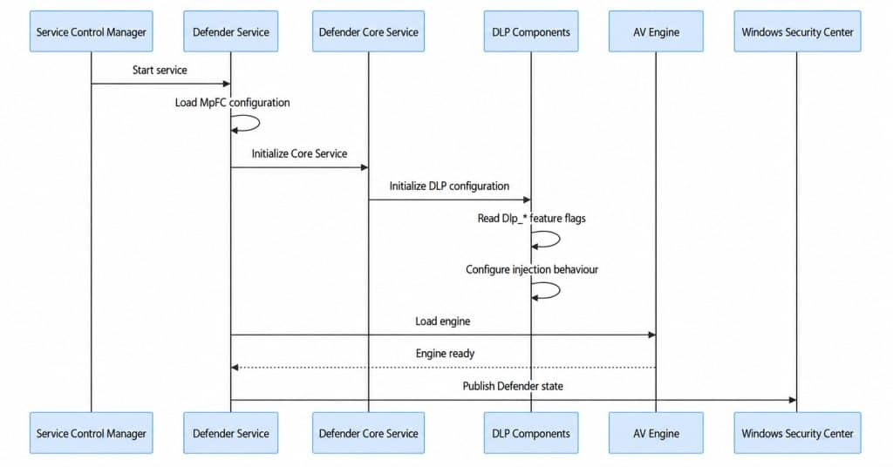
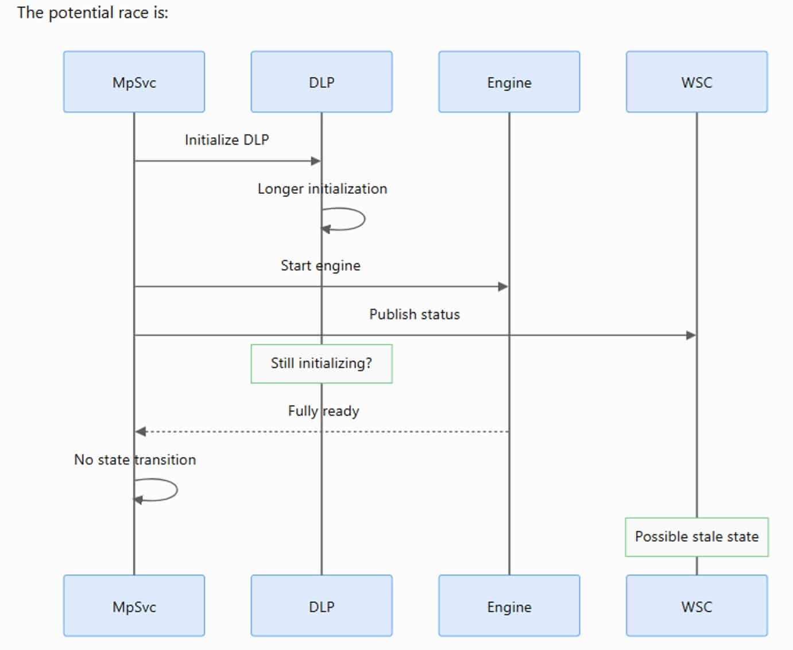
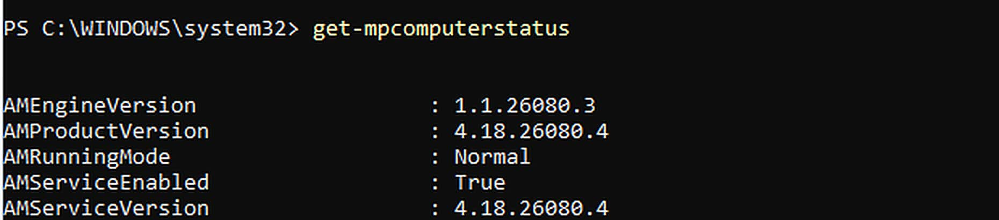
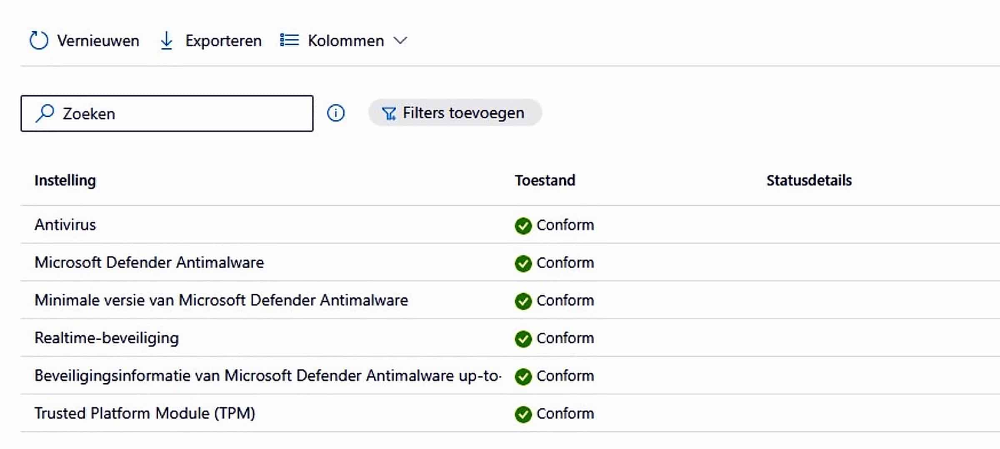

Seeing Windows claim Defender is off while Defender is actually running is one thing. Having that same bad state flow into Intune compliance is something else entirely.
That is what made this issue so disruptive.It was not just a confusing message in Windows Security. For affected tenants, devices could fail the Antivirus compliance check, become noncompliant, and then get blocked by Conditional Access even though Microsoft Defender Antivirus was still active and protecting the device.
So the real story was not only that Windows showed the wrong status. The real story was that Windows Security Center could hold the wrong antivirus state, Intune could trust it, and access to company resources could be cut off because of it.
Defender Turned Off
Suddenly, many users started reporting the Windows Security notification was telling them to turn virus protection back on…
{kind=link}

Others opened Security providers and saw Microsoft Defender Antivirus listed as turned off.
{kind=link}

Which is weird…. because at the same time, Defender itself still reported that its service was enabled. Let me explain what happened
Why this became an Intune problem
When Intune checks the Antivirus requirement in a Windows compliance policy, it relies on Windows Security Center (WSC) to report whether a registered antivirus product is enabled and up to date. If WSC reports that the antivirus is disabled or out of date, Intune can mark the device noncompliant even when Defender itself is still running and protecting it.
{kind=link}

We saw a similar disconnect between the actual device state and the compliance result in Why Intune Devices Became Noncompliant After the July Update. That was a different issue: a Device Health Attestation failure caused BitLocker, Secure Boot, and Code Integrity checks to report errors even when those features were enabled. The connection is not the cause, but the consequence: a problem with the information used to evaluate compliance can make a healthy device appear noncompliant.
That noncompliant state is then reported to Microsoft Entra. When an applicable Conditional Access policy requires the device to be marked as compliant, Entra uses that result to decide whether access is granted or blocked.
This is why the impact went beyond a warning in Windows Security. Defender could still be protecting the device while the wrong compliance signal prevented the user from accessing company resources. Calling it only a UI bug misses that consequence.
How Defender and WSC normally work
Defender does the real protection work. It starts the services, loads the engine, and protects the device.
Windows Security Center is the status layer. WSC keeps track of which antivirus provider is registered and what state that provider reports.
Windows Security reads that WSC state. DeviceStatus uses that state. Intune then uses DeviceStatus for the general Antivirus compliance requirement.
{kind=link}

Where the Defender race happened
The problem was timing… A race Condition
WSC could ask for the antivirus state while Defender was still finishing initialization.
If that happened at the wrong moment, WSC could keep an empty or stale state even though Defender became fully healthy a moment later.
Once WSC had the wrong answer, everything downstream could believe it too: Windows Security, DeviceStatus, Intune compliance, and then Conditional Access.
{kind=link}

Trying to repair the WSC state ourselves
At the time there was no official fix available, so we tried to get Defender and Windows Security Center back in sync ourselves.
Remember what happened during startup: Defender could finish loading, but WSC could still be holding the wrong answer. That was the part we wanted to repair, rather than immediately removing the Antivirus requirement from Intune.
The tool first checks whether Defender is actually running with protection enabled. It then checks what WSC is reporting. We are looking for that specific mismatch: Defender is working, but WSC says something is wrong. A Windows Security warning on its own is not enough.
When we run a repair, the first attempt uses Defender’s own repair command. The tool then waits a moment and checks both sides again. The goal is to give Defender another chance to update the status that WSC holds.
If that does not help, we can choose to return to the previous Defender platform or, as a last resort, reset it to the copy included with Windows. Those are separate options, not steps the tool runs automatically. The reset also needs extra confirmation.
After each attempt, the tool shows the result before and after. We want to see that Defender is still working and WSC is now reporting it correctly. Running a command without an error is not enough to call the repair successful.
So we were not telling Intune to ignore the failure. We were trying to correct the information it was using.
The catch was that this repaired the wrong status, not the startup race. Another reboot could still bring the problem back.
The workaround did give us one more useful clue though. When we forced Defender to register its state again, or moved back to an earlier platform, WSC recovered. That pointed us more and more toward the Defender platform and its startup timing, rather than Intune itself.
So when a new Defender platform build appeared, the next test was obvious: get that build onto one of the affected devices and run the same startup test again. That is where 4.18.26080.4 became interesting.
What 4.18.26080.4 actually changed
The workaround showed us that refreshing or changing the Defender platform could get WSC healthy again, but it still didn’t explain why the problem happened in the first place. 4.18.26080.4 finally gave us that missing piece.
The workaround repaired WSC after the state had gone wrong. Version 4.18.26080.4 changed the startup conversation itself.
First, Defender sets up its WSC integration earlier. When the WSC callback arrives, Defender checks whether its own initialization has finished. If Defender is already ready, it simply reads the real antivirus state and publishes that state to WSC.
If Defender is still starting, .4 doesn’t let that moment disappear. It queues a bounded wait and gives Defender up to 50 seconds to finish. If Defender becomes ready during that window, WSC gets the real state normally.
If Defender is still not ready after that wait, .4 reports a temporary AV ON state to WSC and remembers that the answer was temporary. That temporary state is only there to bridge the startup gap. It does not turn Defender on, and it does not replace the real protection state.
Once Defender finishes initializing, it comes back and reconciles WSC. It reads the actual antivirus state again and replaces the temporary answer with the truth. If Defender is really ON, WSC gets ON. If Defender is really OFF, WSC gets OFF.
It also has a retry path now. If the WSC update fails, or another state change happened while the update was in progress, Defender schedules another attempt. The important difference is that the status no longer depends on one perfectly timed update during startup.
Old behavior: miss the timing and WSC could stay wrong. New behavior: wait if needed, use a temporary state only when necessary, then come back with the real state and retry until WSC has caught up.
In the flow below, MDAV means Microsoft Defender Antivirus. The temporary ON state is a WSC reporting state only. The real Defender state is still read and published as soon as initialization finishes.

One important publication note
At the time of writing, Microsoft’s public Windows release health advisory still lists the issue as Confirmed and says a resolution will come in a future Defender update. The 4.18.26080.4 behavior described above is based on our testing and the platform changes we observed, not on a public Microsoft advisory that already names .4 as the resolved build.
Getting The Defender 4.18.26080.4 Release before Broad
Once 4.18.26080.4 became available, we moved a test device to the Defender Beta platform update channel so we did not have to wait for the Broad rollout.
Microsoft documents the monthly rollout order as Beta first, then Preview, then the staged rollout, with Current Channel (Broad) receiving the update after the gradual rollout completes.
That lets us validate the fixed build on an affected device first.
Set-MpPreference -PlatformUpdatesChannel Beta
Get-MpPreference | Select-Object PlatformUpdatesChannel, EngineUpdatesChannel, DefinitionUpdatesChannel, DisableGradualRelease
Once we validated the fix, we captured the Download itself and published it here. Defender update here
Microsoft support quoted September 17 for Broad availability of the fix. I could not verify that exact date in Microsoft’s public documentation, so I would word it as a reported support date rather than a public Microsoft release date.
Check the Defender platform version
After installing the update, we checked the platform version. The output below shows AMProductVersion and AMServiceVersion at 4.18.26080.4.
Get-MpComputerStatus | Select-Object AMProductVersion, AMServiceVersion
{kind=link}

Figure 6. The installed Defender platform is 4.18.26080.4. This confirms the platform version, not the WSC health or Intune compliance result.
After the fix
Once WSC and Defender agreed again, the false antivirus failure disappeared, and Intune could evaluate the Antivirus requirement correctly again.
{kind=link}

Figure 7. After the fix. The Antivirus-related compliance checks are back to Compliant, shown as Conform in the Dutch portal.
Why separating compliance checks matters
This incident is also a good example of why I prefer not to put every security check into one giant compliance policy.
If Antivirus, BitLocker, Secure Boot, password rules, and everything else are bundled together, one broken detector can force you to touch the whole policy while users are being blocked.
Putting the Antivirus requirement in its own compliance policy gives you a much cleaner escape hatch. If this one check starts returning bad data, you can temporarily change or unassign only that policy and keep the rest of your compliance controls in place.
It also means you can give that one policy a different grace period. Microsoft supports actions and grace periods per compliance policy. I would describe this as an operational design recommendation, not as an official Microsoft rule that every single setting must have its own policy.
The short version
Defender itself could be healthy while WSC was wrong.
That wrong WSC state could make Intune mark the device noncompliant. With Conditional Access requiring a compliant device, the user could then be blocked from corporate resources.
The PowerShell tool checked both sides, tried to correct the wrong status, and checked the result again. That workaround also helped point us toward the Defender platform and its startup timing. Version 4.18.26080.4 then changed the startup behavior itself, and moving a test device to Beta let us validate the fix before Broad.